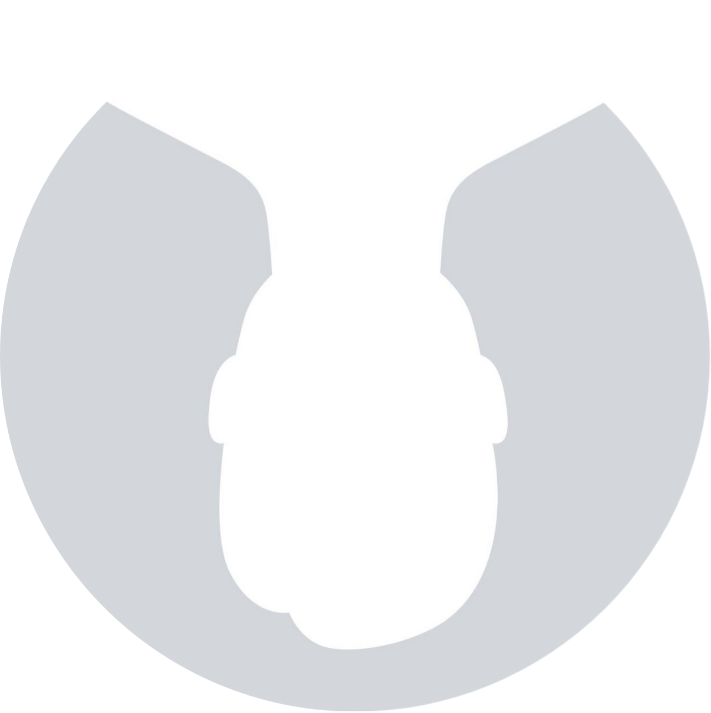

I explore systems, and learn about security. Most of my work involves Linux, reverse engineering, security tools, and building modest, local-first utilities.
I enjoy understanding things from the ground up — from Linux internals and low-level protocols to embedded hardware and private AI assistants.
Turns cryptic SIEM alerts into clear, plain-English verdicts and suggested remediation actions.
Private offline assistant to query and reason over local document collections with zero cloud leaks.
Virtual KVM switch to share one physical keyboard and mouse across multiple PCs seamlessly over Bluetooth.
Expense and income ledger powered by local voice notes with automated parsing.
Distraction-free desktop reader for raw .eml files with built-in tracker and beacon blocking.
3D visualization that maps live operating system processes and resources into an interactive cityscape.
Automated schedule and relay controller for physical school bells built on ESP8266 microcontrollers.
I share quick scripts, security notes, and project experiments on Telegram: t.me/w_logs.